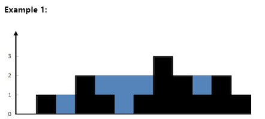

Problem Statement:
Given a sorted array arr, remove the duplicates in-place such that each unique element appears only once. The relative order of the elements should be kept the same, and it should be done in O(1) extra space. You must modify the input array in-place with the result being stored in the first part of the array, and return the length of the unique elements.
Example:
[2, 3, 3, 3, 6, 9, 9]i) keeps track of where to place the next unique element.j) iterates through the entire array.4 elements of the array will be [2, 3, 6, 9] representing unique values.4Approach:
i, keeps track of the index where the next unique element should be placed.j, iterates through the array.j iterates, if the element at j is different from the element at i - 1, we have found a new unique element, and we place it at index i.Python Code with Comments:
def remove_duplicates(arr):
# If the array is empty, return 0
if not arr:
return 0
# Initialize the unique element pointer
i = 1
# Iterate through the array starting from the second element
for j in range(1, len(arr)):
# If the current element is not equal to the previous element
# It means we have found a unique element
if arr[j] != arr[i - 1]:
arr[i] = arr[j] # Place the unique element at index 'i'
i += 1 # Increment the unique index pointer
# Return the length of unique elements
return i
# Example usage
arr = [2, 3, 3, 3, 6, 9, 9]
length = remove_duplicates(arr)
print(f"Length of unique elements: {length}") # Output: 4
print(f"Modified array (first {length} elements): {arr[:length]}") # Output: [2, 3, 6, 9]
Explanation of the Code:
Initialization:
0.i = 1 as the pointer for placing the next unique element.Iteration Through the Array:
1 using the j pointer.arr[j] with the element at i - 1 (the last placed unique element).arr[j] is different from arr[i - 1], it means that arr[j] is unique and should be placed at the current position of i.i to point to the next position.Return Value:
i represents the length of the array that contains unique elements.i positions.Time Complexity:
n is the length of the array. We only iterate through the array once.Space Complexity:
Summary
i pointer keeps track of where to place the next unique element, while the j pointer iterates through the array.Problem Statement:
Given an array of integers arr, find all unique triplets in the array which give the sum of zero. The solution set must not contain duplicate triplets.
Example:
[-3, -1, 1, 2, -1, -4][-3, 1, 2] and [-1, -1, 2].[[-3, 1, 2], [-1, -1, 2]]Approach:
i.i, use two pointers (left and right) to find pairs whose sum is equal to the negative value of the current element (-arr[i]).Python Code with Comments:
def three_sum(arr):
# Sort the array to make it easier to find unique combinations
arr.sort()
# List to store the unique triplets that sum to zero
result = []
# Iterate through the array, considering each element as a potential part of a triplet
for i in range(len(arr) - 2):
# Skip duplicate elements to avoid duplicate triplets
if i > 0 and arr[i] == arr[i - 1]:
continue
# Set up two pointers: one starting just after 'i' and the other at the end of the array
left, right = i + 1, len(arr) - 1
# While 'left' is to the left of 'right', try to find a valid triplet
while left < right:
# Calculate the current sum of the triplet
current_sum = arr[i] + arr[left] + arr[right]
# If the current sum is zero, we found a triplet
if current_sum == 0:
result.append([arr[i], arr[left], arr[right]])
# Move the left pointer to the right while skipping duplicates
while left < right and arr[left] == arr[left + 1]:
left += 1
# Move the right pointer to the left while skipping duplicates
while left < right and arr[right] == arr[right - 1]:
right -= 1
# Move both pointers to continue finding other potential triplets
left += 1
right -= 1
# If the current sum is less than zero, move the left pointer to increase the sum
elif current_sum < 0:
left += 1
# If the current sum is greater than zero, move the right pointer to decrease the sum
else:
right -= 1
# Return the list of unique triplets
return result
# Example usage
arr = [-3, -1, 1, 2, -1, -4]
print(three_sum(arr)) # Output: [[-3, 1, 2], [-1, -1, 2]]
Explanation of the Code:
Sorting the Array:
Iterating with a Fixed Pointer:
i represents the first element of the triplet.Two-Pointer Technique:
i, use two pointers:
left starts just after i.right starts at the end of the array.left and right pointers to find pairs that, together with arr[i], sum to zero.Handling Duplicates:
i, left, and right to avoid generating duplicate triplets.Time Complexity:
Space Complexity:
Summary
left and right) to find pairs that, together with the current element (arr[i]), form a triplet that sums to zero.Problem Statement:
Given an array arr with n objects colored red, white, or blue, represented by integers 0, 1, and 2, respectively, sort them in-place so that objects of the same color are adjacent, with the colors in the order red (0), white (1), and blue (2).
Note: You are not supposed to use the library's sort function for this problem. The idea is to use a single pass (O(n)) and in-place sorting (O(1) space).
Example:
[2, 0, 2, 1, 1, 0]low, mid, high) to segregate the values in a single pass.[0, 0, 1, 1, 2, 2].[0, 0, 1, 1, 2, 2]Approach:
low: Keeps track of the position where 0s should be placed.mid: Current element to be checked.high: Keeps track of the position where 2s should be placed.low = 0, mid = 0, and high = len(arr) - 1.mid exceeds high:
arr[mid] == 0: Swap arr[low] and arr[mid], then increment both low and mid.arr[mid] == 1: Just increment mid.arr[mid] == 2: Swap arr[mid] and arr[high], then decrement high.Python Code with Comments:
def sort_colors(arr):
# Initialize three pointers: 'low', 'mid', and 'high'
low, mid, high = 0, 0, len(arr) - 1
# Iterate until 'mid' crosses 'high'
while mid <= high:
if arr[mid] == 0:
# Swap the current element with the element at 'low'
arr[low], arr[mid] = arr[mid], arr[low]
# Increment both 'low' and 'mid' pointers
low += 1
mid += 1
elif arr[mid] == 1:
# If the element is '1', move the 'mid' pointer forward
mid += 1
else: # arr[mid] == 2
# Swap the current element with the element at 'high'
arr[mid], arr[high] = arr[high], arr[mid]
# Decrement the 'high' pointer
high -= 1
# Example usage
arr = [2, 0, 2, 1, 1, 0]
sort_colors(arr)
print(arr) # Output: [0, 0, 1, 1, 2, 2]
Explanation of the Code:
Initialization:
low (starting from 0) tracks where the next 0 should be placed.mid (starting from 0) is used to iterate through the array.high (starting from the last index) tracks where the next 2 should be placed.Iterate Through the Array:
arr[mid] == 0:
mid with the element at low.0s are moved to the beginning.low and mid.arr[mid] == 1:
mid pointer to the next element.1s are already in the correct position.arr[mid] == 2:
mid with the element at high.2s are moved to the end.high.mid pointer is not incremented because we need to recheck the new value at mid (since it was just swapped).Time Complexity:
n is the length of the array. Each element is processed at most once.Space Complexity:
Summary
low, mid, high), the array is partitioned into three regions:
1 (0s) are placed at the beginning.1 are placed in the middle.1 (2s) are placed at the end.Problem: Given a linked list, find the length of the cycle (if it exists).
Example:
2)32 and the cycle length is 3. The nodes forming the cycle are 2 → 3 → 4 → 2. To determine the length, we can use the fast and slow pointers to detect the cycle and then determine its length by counting the nodes involved.Step-by-Step Solution:
Detect if a Cycle Exists:
Determine the Length of the Cycle:
Visualization:
1 → 2 → 3 → 4
↑ ↓
5 ←-----
In this example, the cycle is formed by nodes 2 → 3 → 4, and the length of this cycle is 3.
Python Code with Detailed Comments:
class ListNode:
def __init__(self, value=0, next=None):
self.value = value
self.next = next
def cycle_length(head):
# Step 1: Detect if a cycle exists using slow and fast pointers
slow, fast = head, head
# Traverse the linked list
while fast is not None and fast.next is not None:
slow = slow.next # Move slow pointer by one step
fast = fast.next.next # Move fast pointer by two steps
# If slow and fast meet, a cycle is detected
if slow == fast:
return count_cycle_length(slow) # Step 2: Calculate the cycle length
return 0 # No cycle found
def count_cycle_length(meeting_node):
# Start from the meeting node
current = meeting_node
length = 0
# Traverse the cycle until we reach the starting point again
while True:
current = current.next # Move to the next node in the cycle
length += 1 # Increment the length count
if current == meeting_node: # If we are back at the start, stop
break
return length
# Example usage:
# Create a linked list with a cycle: 1 -> 2 -> 3 -> 4 -> 5 -> 3 (cycle starts at 3)
head = ListNode(1)
head.next = ListNode(2)
head.next.next = ListNode(3)
head.next.next.next = ListNode(4)
head.next.next.next.next = ListNode(5)
head.next.next.next.next.next = head.next.next # Create a cycle back to node 3
print(cycle_length(head)) # Output: 3
Time Complexity:
Space Complexity:
slow and fast, and a few additional variables).Summary
Problem: Given two singly linked lists, determine if they intersect, and return the intersecting node. Intersection is defined based on reference, not value; if the same node is shared between the two linked lists, they intersect at that node.
Example:
1 → 2 → 3 → 4 → 59 → 4 → 5Node with value 44. This means they share the same reference from that point onward.Visualization:
List A: 1 → 2 → 3 → 4 → 5
↑
List B: 9 → 4
The lists intersect at node 4.
Approach to Solve the Problem
pointerA and pointerB).None) at the same time.Detailed Explanation
pointerA at the head of List A, and pointerB at the head of List B).None) simultaneously.Python Code with Detailed Comments
class ListNode:
def __init__(self, value=0, next=None):
self.value = value
self.next = next
def get_intersection_node(headA, headB):
# If either list is empty, there can be no intersection
if headA is None or headB is None:
return None
# Initialize two pointers, starting at the heads of both lists
pointerA, pointerB = headA, headB
# Traverse both lists until the pointers meet or reach the end
while pointerA != pointerB:
# If pointerA reaches the end of List A, redirect it to the head of List B
pointerA = pointerA.next if pointerA is not None else headB
# If pointerB reaches the end of List B, redirect it to the head of List A
pointerB = pointerB.next if pointerB is not None else headA
# Either both pointers are None (no intersection) or they meet at the intersection node
return pointerA
# Example usage:
# Create intersecting linked lists:
# List A: 1 -> 2 -> 3 -> 4 -> 5
# List B: 9 -> 4 -> 5
headA = ListNode(1)
headA.next = ListNode(2)
headA.next.next = ListNode(3)
intersection = ListNode(4)
intersection.next = ListNode(5)
headA.next.next.next = intersection
headB = ListNode(9)
headB.next = intersection
# Find intersection node
result = get_intersection_node(headA, headB)
if result:
print(f"Intersecting Node: {result.value}") # Output: Intersecting Node: 4
else:
print("No intersection")
Complexity Analysis
Key Points
None at the same time.This approach guarantees that the intersection node is found efficiently without extra memory, making it optimal for large linked lists.
Explanation
You are given a linked list and an integer k. Your task is to reverse the linked list in groups of k nodes at a time. If there are fewer than k nodes left at the end, they should not be reversed.
Example:
1 → 2 → 3 → 4 → 5 → 6 → 7 → 8, k = 33 nodes: 1 → 2 → 3 becomes 3 → 2 → 1.3 nodes: 4 → 5 → 6 becomes 6 → 5 → 4.3 are: 7 → 8, and they are left as is.3 → 2 → 1 → 6 → 5 → 4 → 7 → 8The challenge is to perform this reversal in-place, meaning you cannot use extra space for storing nodes (e.g., a list or array).
Approach:
We use an iterative approach to traverse through the linked list and reverse nodes in chunks of k. We'll have pointers to track the start and end of the sub-lists that need to be reversed, and carefully adjust pointers to achieve the desired result.
Python Code:
class ListNode:
def __init__(self, val=0, next=None):
self.val = val
self.next = next
def reverse_k_group(head, k):
# Step 1: Create a dummy node to act as the new head
dummy = ListNode(0)
dummy.next = head
group_prev = dummy
# Function to find the k-th node from the given start node
def get_kth_node(start, k):
current = start
count = 0
while current and count < k:
current = current.next
count += 1
return current
while True:
# Step 2: Find the k-th node from the current group start
kth = get_kth_node(group_prev, k)
if not kth:
break # Less than k nodes remaining, stop processing
# Step 3: Reverse k nodes
group_next = kth.next
prev, current = group_next, group_prev.next
# Reverse k nodes
for _ in range(k):
next_node = current.next
current.next = prev
prev = current
current = next_node
# Step 4: Update the pointers for the previous group
new_group_start = group_prev.next
group_prev.next = prev
group_prev = new_group_start
return dummy.next
# Helper function to print the linked list
def print_linked_list(head):
current = head
while current:
print(current.val, end=" -> " if current.next else "\n")
current = current.next
# Example usage
# Creating the linked list: 1 -> 2 -> 3 -> 4 -> 5 -> 6 -> 7 -> 8
nodes = [ListNode(i) for i in range(1, 9)]
for i in range(len(nodes) - 1):
nodes[i].next = nodes[i + 1]
k = 3
print("Original Linked List:")
print_linked_list(nodes[0])
print("\nReversed in Groups of k:")
new_head = reverse_k_group(nodes[0], k)
print_linked_list(new_head)
Complexity Analysis:
Time Complexity: O(n)
n is the number of nodes in the linked list).O(n).Space Complexity: O(1)
This solution effectively reverses every k nodes in the linked list while maintaining O(n) time complexity and O(1) space complexity, making it both efficient and optimal for this type of in-place linked list manipulation.
Problem Explanation
You are given a linked list and an integer k. The task is to:
k.Example:
1 → 2 → 3 → 4 → 5 → 6, k = 21 → 2): Reverse to 2 → 1.3 → 4): Reverse to 4 → 3.5 → 6): Reverse to 6 → 5.2 → 1, 4 → 3, 6 → 5) with their corresponding positions in the original linked list.1 → 2 → 2 → 1 → 3 → 4 → 4 → 3 → 5 → 6 → 6 → 5The challenge involves both reversing the nodes and then merging them effectively without additional space.
Solution Approach
We use an iterative approach where we traverse through the linked list twice:
k.Python Code with Detailed Comments
Below is a Python implementation that solves the problem:
class ListNode:
def __init__(self, val=0, next=None):
self.val = val
self.next = next
def reverse_k_group_and_merge(head, k):
# Step 1: Reverse nodes in groups of k
dummy = ListNode(0)
dummy.next = head
group_prev = dummy
def get_kth_node(start, k):
# Finds the kth node from the start node
current = start
count = 0
while current and count < k:
current = current.next
count += 1
return current
while True:
# Find the k-th node from the current position
kth = get_kth_node(group_prev, k)
if not kth:
break # Not enough nodes to form a group of k
# Reverse k nodes
group_next = kth.next
prev, current = group_next, group_prev.next
for _ in range(k):
next_node = current.next
current.next = prev
prev = current
current = next_node
# Connect with previous part
new_group_start = group_prev.next
group_prev.next = prev
group_prev = new_group_start
# Step 2: Merge with the original linked list
# Create two pointers to merge the original and reversed parts
original = head
reversed_head = dummy.next
merged_dummy = ListNode(0)
merged_current = merged_dummy
while original and reversed_head:
# Merge one node from original, then one from reversed
merged_current.next = original
original = original.next
merged_current = merged_current.next
merged_current.next = reversed_head
reversed_head = reversed_head.next
merged_current = merged_current.next
return merged_dummy.next
# Helper function to print the linked list
def print_linked_list(head):
current = head
while current:
print(current.val, end=" -> " if current.next else "\n")
current = current.next
# Example usage
# Creating the linked list: 1 -> 2 -> 3 -> 4 -> 5 -> 6
nodes = [ListNode(i) for i in range(1, 7)]
for i in range(len(nodes) - 1):
nodes[i].next = nodes[i + 1]
k = 2
print("Original Linked List:")
print_linked_list(nodes[0])
print("\nReversed and Merged Linked List:")
new_head = reverse_k_group_and_merge(nodes[0], k)
print_linked_list(new_head)
Complexity Analysis
Time Complexity: O(n)
n is the number of nodes in the list).O(n).Space Complexity: O(1)
O(1).Summary
This solution effectively:
k.k nodes are merged back with their original order.It maintains an O(n) time complexity and O(1) space complexity, making it both efficient and optimal for in-place linked list manipulation.
Certainly! Let's go through Problem 5, Evaluate Reverse Polish Notation.
Description: Given an expression in Reverse Polish Notation (RPN), evaluate its value. The RPN is a mathematical notation where every operator follows all of its operands. You are guaranteed that the input will be valid.
Supported Operators: +, -, *, / (integer division).
+): Adds two numbers.-): Subtracts the second operand from the first.*): Multiplies two numbers./): Divides the first operand by the second, performing integer division. The result should be truncated towards zero.Example:
["2", "1", "+", "3", "*"]9Explanation:
3 back onto the stack.9 back onto the stack.9.Solution Approach:
We use a stack to handle this problem efficiently:
+, -, *, /):
Detailed Walkthrough of Example:
For the input ["2", "1", "+", "3", "*"]:
[].2: [2]1: [2, 1]"+":
1 and 2.2 + 1 = 3.3 back onto the stack: [3]3: [3, 3]"*":
3 and 3.3 * 3 = 9.9 back onto the stack: [9]9.Python Code:
def eval_rpn(tokens):
stack = []
for token in tokens:
if token in "+-*/":
# Pop the two top-most elements
b = stack.pop()
a = stack.pop()
# Perform the respective operation
if token == "+":
stack.append(a + b)
elif token == "-":
stack.append(a - b)
elif token == "*":
stack.append(a * b)
elif token == "/":
# Integer division towards zero
stack.append(int(a / b))
else:
# If the token is a number, push it to the stack
stack.append(int(token))
# The final result is the last item in the stack
return stack.pop()
# Example usage
tokens = ["2", "1", "+", "3", "*"]
print(eval_rpn(tokens)) # Output: 9
Explanation of the Code:
stack.Edge Cases:
["4"]), the result is that number itself.int(a / b) ensures integer division that truncates towards zero.This approach runs in O(n) time, where n is the number of tokens, because we only push and pop each token once, making it very efficient.
Sure! Let's go through Problem 6: Largest Rectangle in Histogram.
Description: Given an array of integers where each element represents the height of a histogram bar, find the area of the largest rectangle that can be formed within the bounds of the histogram.
Example:
[2, 1, 5, 6, 2, 3]10Explanation:
For the given histogram [2, 1, 5, 6, 2, 3], the largest rectangle has an area of 10. This rectangle is formed by the heights 5 and 6 with a width of 2 (from index 2 to 3).
Approach: Monotonic Stack
To solve this problem efficiently, we can use a monotonic stack to maintain the heights in increasing order, which helps in calculating the maximum area of a rectangle when we encounter a height that breaks the increasing order.
Steps:
max_area variable to track the largest rectangle area.Detailed Walkthrough of Example
For the histogram [2, 1, 5, 6, 2, 3]:
Initialize stack = [] and max_area = 0.
Traverse through the histogram:
0 onto the stack → stack = [0].1 < 2, pop 0. Calculate area as 2 * 1 = 2. Push 1 onto the stack → stack = [1].2 → stack = [1, 2].3 → stack = [1, 2, 3].2 < 6, pop 3. Area = 6 * 1 = 6. Pop 2, area = 5 * 2 = 10. Update max_area = 10. Push 4 → stack = [1, 4].5 → stack = [1, 4, 5].Remaining Elements: After finishing the array, pop and calculate for each remaining index:
5, area = 3 * 1 = 3.4, area = 2 * 4 = 8.Final max_area is 10.
Python Code:
def largest_rectangle_area(heights):
stack = []
max_area = 0
n = len(heights)
for i in range(n):
# Pop elements if the current height is less than the height of the top of the stack
while stack and heights[i] < heights[stack[-1]]:
height = heights[stack.pop()] # Height of the popped bar
width = i if not stack else i - stack[-1] - 1 # Width of the rectangle
max_area = max(max_area, height * width)
# Push current index onto stack
stack.append(i)
# Pop all remaining elements in the stack
while stack:
height = heights[stack.pop()]
width = n if not stack else n - stack[-1] - 1
max_area = max(max_area, height * width)
return max_area
# Example usage
heights = [2, 1, 5, 6, 2, 3]
print(largest_rectangle_area(heights)) # Output: 10
Explanation of Code:
stack and max_area = 0.Edge Cases:
[1, 2, 3, 4], all bars are pushed until the end, and the largest rectangle is the area of the smallest bar multiplied by the width of the entire histogram.[2, 2, 2, 2], the largest rectangle is simply height * length.Complexity:
n is the number of bars in the histogram. Each bar is pushed and popped from the stack only once.Using a monotonic stack helps in managing heights efficiently, ensuring we only calculate the area when needed and maintaining a linear time complexity. This approach provides an optimal solution for finding the largest rectangle area in a histogram.
Sure! Let's go through Problem 16: Trapping Rain Water.
Description:
Given n non-negative integers representing an elevation map where the width of each bar is 1, compute how much water it can trap after raining.
Example:
[0, 1, 0, 2, 1, 0, 1, 3, 2, 1, 2, 1]6
Explanation:
For the elevation map [0, 1, 0, 2, 1, 0, 1, 3, 2, 1, 2, 1], the water trapped at each index is:
2 → 1 unit of water4 → 1 unit5 → 2 units6 → 1 unit9 → 1 unitAdding up these values gives a total of 6 units of trapped water.
Approach: Monotonic Stack
To solve this efficiently, we use a monotonic decreasing stack. This approach leverages the idea of finding "boundaries" for each water trap:
Steps:
water_trapped to accumulate the total trapped water.Detailed Walkthrough of Example
For the elevation map [0, 1, 0, 2, 1, 0, 1, 3, 2, 1, 2, 1]:
stack = [] and water_trapped = 0.0 → stack = [0].1 → stack = [0, 1].2 → stack = [0, 1, 2].2. Water trapped = (min(1, 2) - 0) * (3 - 1 - 1) = 1. water_trapped = 1.1. Water trapped = (min(0, 2) - 1) * (3 - 0 - 1) = 2. water_trapped = 3.4 → stack = [0, 3, 4].5 → stack = [0, 3, 4, 5].5. Water trapped = (min(2, 1) - 0) * (6 - 4 - 1) = 1. water_trapped = 4.6, 4, and 3.water_trapped = 6.Python Code:
def trap_rain_water(heights):
stack = []
water_trapped = 0
for i, height in enumerate(heights):
# Calculate water trapped if current height is greater than top of the stack
while stack and height > heights[stack[-1]]:
top = stack.pop() # Pop the top of the stack
if not stack:
break # No left boundary
# Calculate the distance between left and right boundaries
distance = i - stack[-1] - 1
# Find the bounded height
bounded_height = min(height, heights[stack[-1]]) - heights[top]
water_trapped += distance * bounded_height
# Push the current index onto the stack
stack.append(i)
return water_trapped
# Example usage
heights = [0, 1, 0, 2, 1, 0, 1, 3, 2, 1, 2, 1]
print(trap_rain_water(heights)) # Output: 6
Explanation of Code:
stack and set water_trapped = 0.water_trapped accumulates the total units of water trapped.Edge Cases:
[1, 1, 1] or increasing heights [1, 2, 3] result in zero trapped water.[5, 4, 3, 2, 1], no water can be trapped, as there’s no boundary.Complexity:
n is the number of heights, since each height is processed once.Using a monotonic stack helps efficiently manage boundaries and enables an optimal solution for the problem. The above solution provides a way to calculate trapped rainwater by leveraging left and right boundaries to define each trapped segment.